Physics simulations created by p-simtor
Each demo was generated by a coding agent using the installed p-simtor skill, from the prompt shown on its card, in a separate project. Every page computes its motion from the real equations, shows its own verification, and runs entirely in your browser.
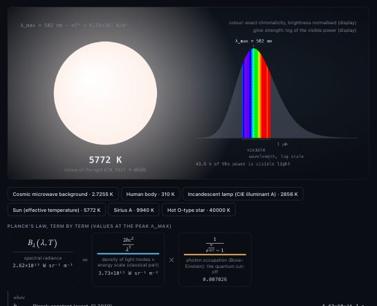
Black-body radiation
/p-simtor simulate black body radiationPlanck's law live: the real colour of hot objects, from the cosmic microwave background to a 40 000 K star.
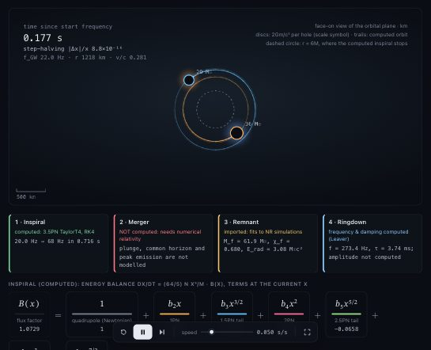
Binary black-hole merger
/p-simtor simulate two black holes mergingTwo black holes spiral together and chirp (post-Newtonian inspiral); the merger itself is honestly marked as not computed.
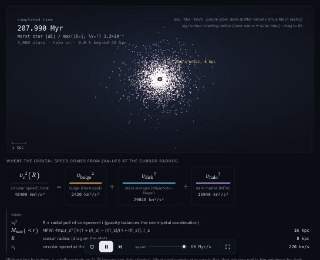
Dark matter and galaxy rotation
/p-simtor show why galaxies need dark matterThousands of stars orbit a Milky-Way model. Switch off the dark-matter halo and the outer disk lets go.
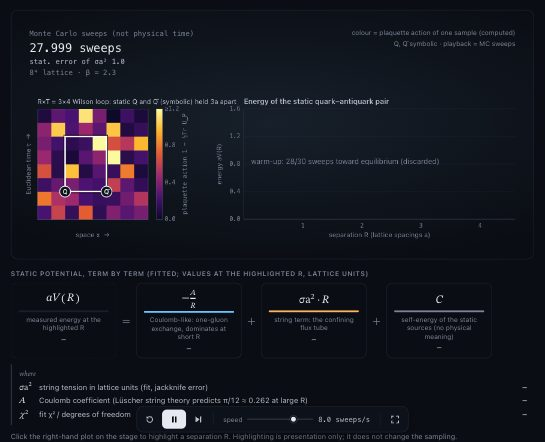
Quark confinement
/p-simtor explain quark confinement with an interactive, scientifically qualified visualizationLattice gauge theory computes the energy between two colour charges: it keeps rising with distance, so they cannot separate.
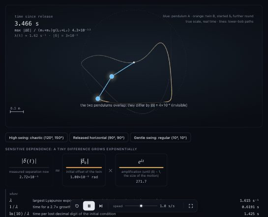
Why a double pendulum is chaotic
/p-simtor show why a double pendulum is chaoticTwo pendulums started 10⁻⁸ rad apart part ways after about 8 s; the Lyapunov exponent is measured live.
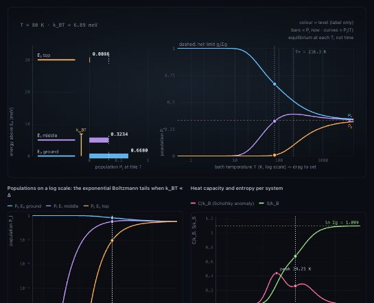
Three-level system heating up
/p-simtor show how the populations of a three-level quantum system change as it heats upBoltzmann populations of three energy levels as the temperature rises, with the heat-capacity peaks they cause.
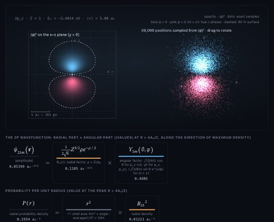
Hydrogen 2p orbital
/p-simtor visualize the probability density of a hydrogen 2p orbitalThe exact 2p orbital as a probability cloud of 20 000 sampled positions, in 3D and as a slice.
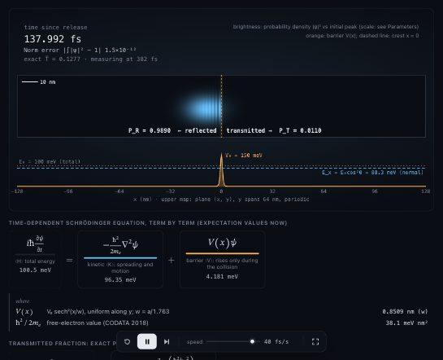
Quantum tunnelling in 2D
/p-simtor simulate a quantum wave packet tunnelling through a barrier in 2DAn electron wave packet hits a barrier and splits; the transmitted part matches the exact quantum result.
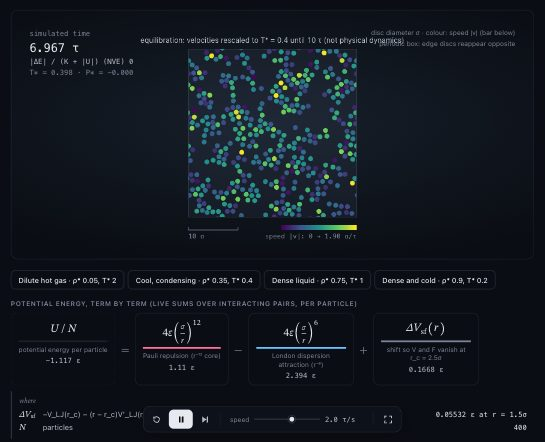
Lennard-Jones fluid (2D)
/p-simtor create an interactive Lennard-Jones particle simulationMolecular dynamics of a 2D Lennard-Jones fluid: hot gas, condensing clusters and dense liquid.
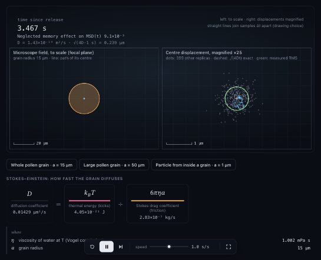
Brownian motion of a pollen grain
/p-simtor simulate Brownian motion of a pollen grain in waterPollen grains jiggle in water; their spread grows as 4Dt, Einstein's relation, and Brown's real observation is one click away.
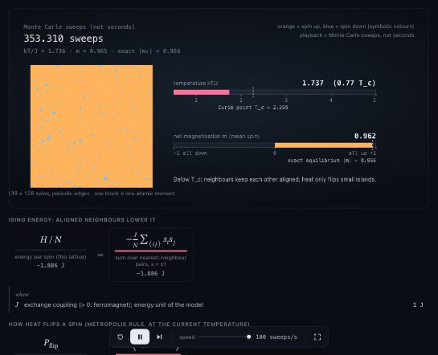
Heating a magnet
/p-simtor show how a magnet loses its magnetism when heatedA 128×128 Ising magnet heated past its Curie point: ordered domains break up into noise.
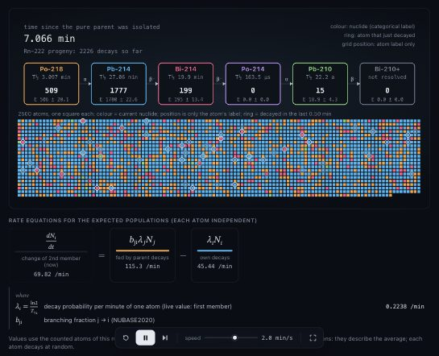
Radioactive decay chain, atom by atom
/p-simtor simulate a radioactive decay chain atom by atomRadon-222 progeny decaying atom by atom, against the smooth Bateman curves.
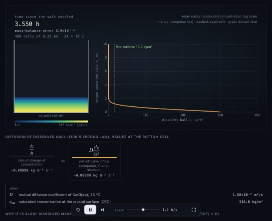
Salt dissolving in still water
/p-simtor simulate how salt dissolves in a glass of waterSalt on the bottom of a still glass dissolves in hours, but takes weeks to spread through the water by diffusion.